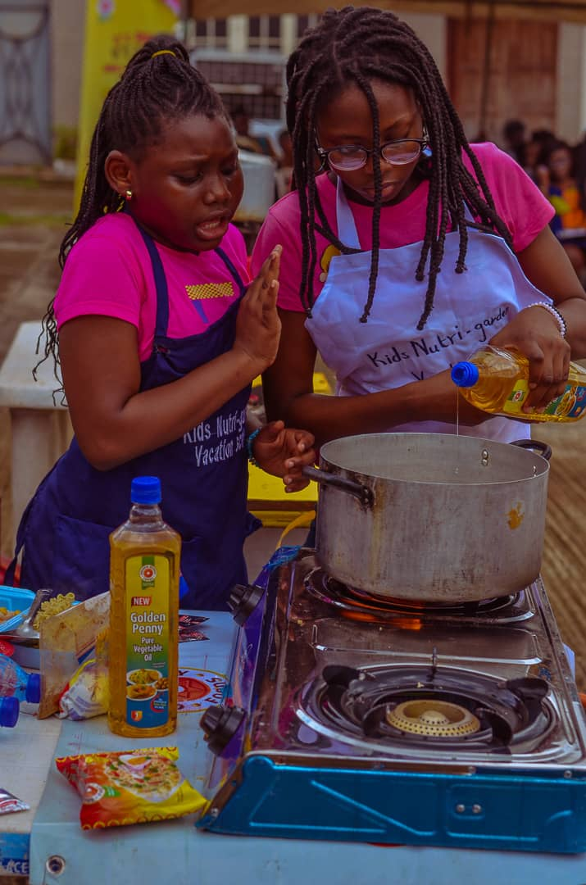
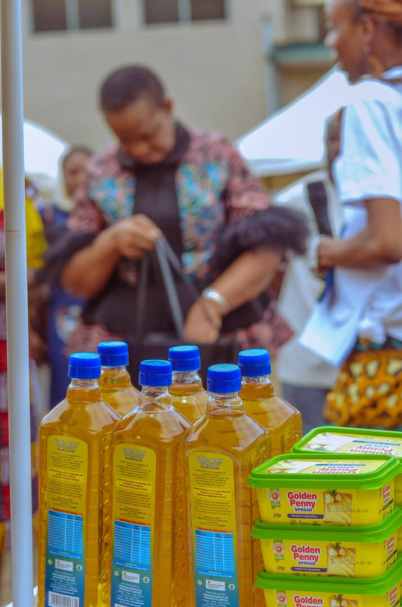
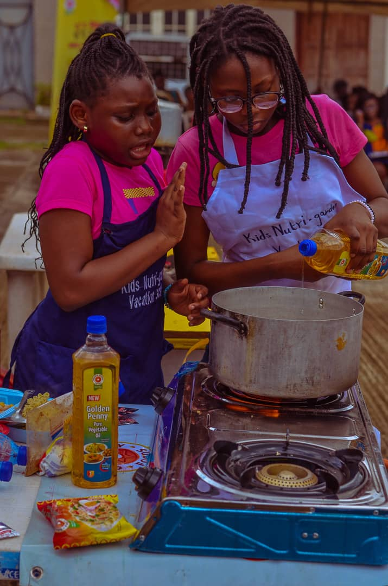
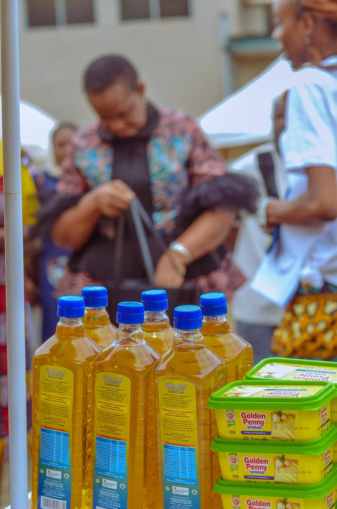

KNGVS 2023 07 EXHIBITION HIGHLIGHTS KNGVS amplified edition ended with her exciting annual garden-2-fork exhibition and funday on 01 September, 2023, tagged 'GrowIt, CookIt, LoveIt' exhibition and fun day. It was a grand show-and-tell event


KNGVS amplified editionended with her exciting annualgarden-2-fork exhibition and funday on 01 September, 2023, tagged 'GrowIt, CookIt, LoveIt' exhibition and fun day. It was agrand show-and-tell event. The exhibition day featured cook-with-me contest (parent and child pair) between partner schools and supported by Golden Penny Foods, creative presentations by the children, singing with the Provost COMUI, experience sharing by children and parents of KNGVS, anthropometry checks, display and sales of veggies and recipes from the kids nutri-garden, games, exhibition by different nutripreneurs and agripreneurs, among which was the FRUGGIES project of the Dept. of Human Nutrition & Dietetics, awards of certificates and prizes and other fun activities. A new feature to the exhibition was the raffle draw with children and adults winning attractive prizes worth thousands of Naira from our sponsors.
 



Prof. Oluyemisi Bamgbose, Deputy Vice-Chancellor Research Innovation and Strategic Partnerships (RISP),University of Ibadan; Prof. Olayinka Omigbodun, Provost College of Medicine University of Ibadan (COMUI); ; Prof. A.F. Adeniyi, Deputy Provost COMUI; Dr. Oluyemisi Folasire, Ag. Head, Department, Human Nutrition and Dietetics; Director of the Centre for Entrepreneurship & Innovation (CEI), Prof. Oyedunni Arulogun, Deans of the Faculty of Public Health and Agriculture graced the wonderful occasion. More than one hundred and fifty persons attended, including , the educators, parents, and alumni of KNGVS, exhibtiors Provost COMUI, D/Provost COMUI, Ag HOD Human Nutrition &Dietetics, Dean Faculty of Public Health, Prof Folake Samuel, KNGVS Coordinator